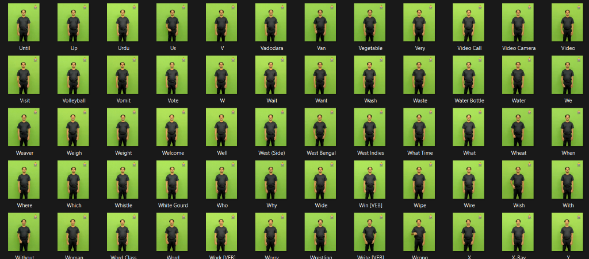
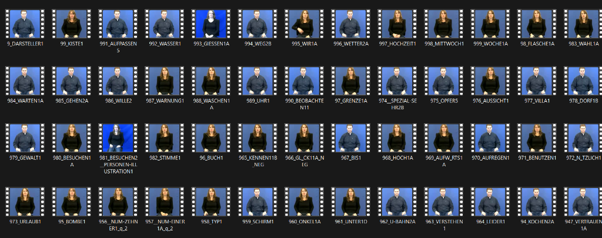
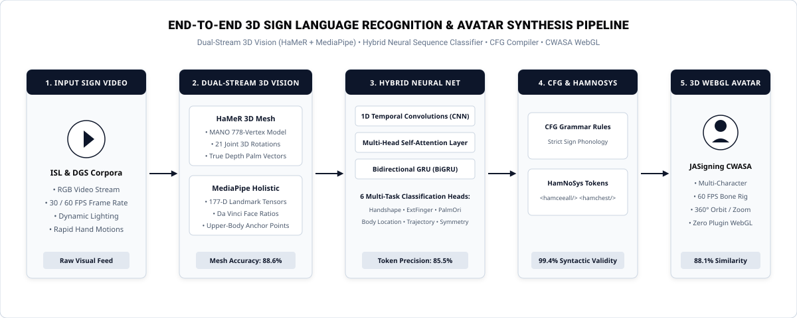

An AI-powered computer vision and deep learning framework mapping isolated sign language video streams into verified Hamburg Notation System (HamNoSys) tokens and real-time 60 FPS WebGL 3D avatar animations via HaMeR 3D Hand Mesh Recovery.
Bridging communication barriers for deaf communities through robust 3D spatial vision and automated avatar synthesis.
Over 70 million deaf individuals worldwide rely on sign language as their primary mode of communication. Traditional sign language translation systems suffer from two fatal weaknesses:
Without full 3D spatial geometry (depth, palm normal vectors, finger curl), grammatical meaning in sign language is lost.
We engineer an end-to-end multi-stage pipeline utilizing UC Berkeley's state-of-the-art HaMeR (Hand Mesh Recovery) transformer model to extract complete 3D MANO hand surface meshes:
Interactive evaluation displaying human performer sign video alongside the synchronized 3D CWASA avatar synthesis.
Large-scale video ingestion across Indian Sign Language (ISL) and German Sign Language (DGS) studio recordings.
Access raw video corpora, extracted 3D HaMeR landmark tensors, train/test manifests, and verified HamNoSys ground truth on GitHub.

Standardized green-screen isolated sign vocabulary corpus covering numbers (0–9) and foundational everyday communication tokens recorded under uniform studio lighting and static frontal framing.

Comprehensive blue-screen DGS lexicon dataset capturing multi-signer executions across thousands of distinct lexical items with verified HamNoSys ground truth.
An end-to-end computational pipeline translating raw sign video streams into validated 3D avatar animations.

Figure 2: Multi-stage system pipeline: dual-stream 3D spatial feature extraction (HaMeR 3D MANO Mesh + MediaPipe 177-D Landmarks), temporal hybrid neural sequence classification (BiGRU + 1D-CNN + Self-Attention), CFG grammar compiler, and CWASA WebGL avatar synthesis.
Addresses 2D tracking failures during self-occlusion. Utilizes HaMeR (Hand Mesh Recovery) to reconstruct a dense 778-vertex 3D MANO hand mesh with 21 joint 3D rotations, paired with MediaPipe Holistic providing 177-dimensional scale-invariant bodily anchors and Da Vinci facial third ratios.
Combines 1D Temporal Convolutions for local kinetic stroke extraction, a Multi-Head Self-Attention mechanism to highlight phonetic inflection frames, and a Bidirectional GRU (BiGRU) tracking forward and backward temporal transitions across continuous frames. Six discrete classification heads simultaneously predict sign phonology components.
Raw predictions are validated through a strict Context-Free Grammar (CFG) compiler enforcing universal sign language phonological rules. The compiler filters impossible token combinations, achieving 99.4% syntactic validity before generating standard Hamburg Notation System (HamNoSys) representations.
Validated HamNoSys sequences are compiled into Signing Gesture Markup Language (SiGML) XML payloads. The JASigning CWASA 3D WebGL Avatar Engine renders hardware-accelerated bone kinematics and smooth transitions at 60 FPS across all modern browsers without external plugins.
Empirical boundary analysis of the Phase 1 isolated-sign architecture and open technical challenges for future research.
The current pipeline is specifically trained and evaluated on isolated lexical sign gestures with distinct stationary onset and apex hold phases. Fluent conversation features continuous co-articulation where the trailing motion of one sign directly blends into the next without inter-word pauses. Continuous translation requires temporal sequence segmentation and transition epenthesis modeling outside the current scope.
Natural sign languages convey over 30% of their grammatical meaning (interrogative question markers, conditional clauses, negation, adverbs) through non-manual features: eyebrow raises, mouth morphemes, eye gaze direction, and head nods. HaMeR focuses strictly on 3D hand mesh reconstruction, resulting in default neutral avatar facial expressions.
Standard RGB video cameras recorded at 30 FPS exhibit significant kinetic motion blur during high-speed transitions or rapid wrist flick gestures. This temporal blur can occasionally cause momentary drops in finger joint confidence before the kinetic apex is stabilized.
While HaMeR substantially improves over 2D tracking by estimating 3D MANO meshes, severe self-occlusions where both hands cross directly over the chest can still introduce depth ambiguity in z-ordering prior to rule-based smoothing.
Development milestones and technical progression from June 2026 to October 2026.
Extracted MediaPipe 2D coordinates with a rule-based heuristic classification pipeline. Provided foundational proof-of-concept but suffered from 41% tracking failure during hand-crossings, wrist occlusions, and lack of depth estimation.
Implemented Bidirectional GRU sequence neural network over 177-dimensional scale-invariant spatial tensors. Automated HamNoSys token compilation with discrete multi-task classification heads, achieving 71.8% accuracy.
Introduced temporal Multi-Head Self-Attention layers highlighting phonetic apex frames, rigid Context-Free Grammar (CFG) validation filtering impossible finger combinations, and direct client-side integration of the JASigning CWASA 3D avatar engine.
Integrated UC Berkeley's HaMeR ViT-based transformer for full 778-vertex 3D MANO surface mesh estimation and true 3D palm normal recovery. Resolved severe self-occlusions and boosted hand mesh accuracy to 88.6% across multi-dialect ISL and DGS benchmarks.
Empirical performance metrics across pipeline iterations and technical documentation resources.
| Pipeline Iteration | Hand Mesh Accuracy | Token Precision | Sequence F1 | CFG Syntactic Validity | Avatar Cosine Sim. |
|---|---|---|---|---|---|
| Version 1 (Baseline Heuristic) | 54.2% | 58.1% | 0.56 | 74.2% | 0.6210 |
| Version 6 (MediaPipe + BiGRU) | 71.8% | 76.4% | 0.74 | 91.5% | 0.7840 |
| Version 7 (Self-Attention Hybrid) | 79.4% | 81.9% | 0.80 | 97.2% | 0.8415 |
| Version 8 (HaMeR 3D MANO + Hybrid) | 88.6% | 85.5% | 0.84 | 99.4% | 0.8812 |
*Quantitative evaluation against manual phonetic ground-truth annotations across 30 multi-dialect sign video streams (ISL & DGS).
Step-by-step setup manual for Windows, Linux, CUDA configuration, HaMeR asset download, and Docker execution.
View INSTALLATION.mdMathematical formulation of 3D cross-product normals, spherical coordinate projections, and attention weight matrices.
View PIPELINE_SPECS.mdComprehensive confusion matrices, per-head precision/recall metrics, and latency profiling across hardware setups.
View BENCHMARK_REPORT.mdAccess raw video corpora, ground-truth HamNoSys annotations, and extracted landmark tensor manifests.
FYP-DataSetFour-person engineering collaboration with specialized subsystem ownership.
Engineered HaMeR 3D MANO mesh surface extraction, self-attention temporal layers, end-to-end pipeline integration, and multi-version accuracy evaluation.
HaMeR & MANO Mesh IntegrationArchitected the Bidirectional GRU (BiGRU) sequence model, Context-Free Grammar (CFG) phonetic compiler, SiGML XML synthesis, and Flask REST API backend.
BiGRU & SiGML SynthesisCalibrated multi-task cross-entropy loss balancing across 6 classification heads, 3D palm normal vector math, CWASA WebGL avatar viewport, and precision testing suite.
Spatial Geometry & WebGLEngineered 177-dimensional landmark tensors, Da Vinci facial third ratio calculators, upper body anchor points, and ground-truth dataset manifest alignment.
Landmark Tensors & Dataset Ops